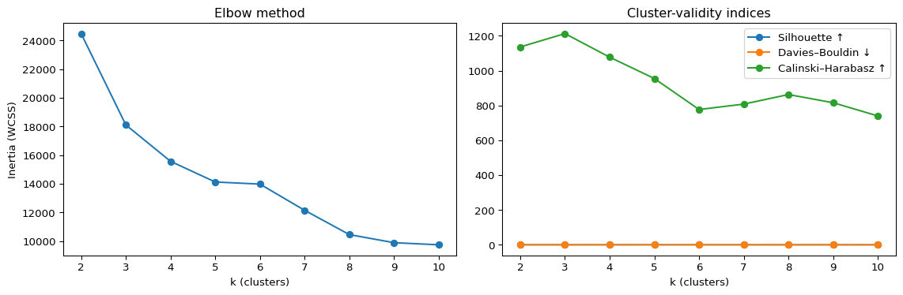
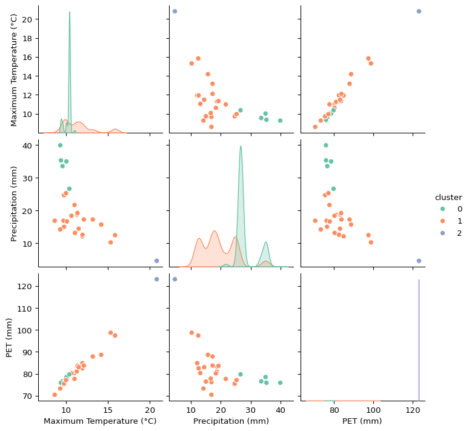
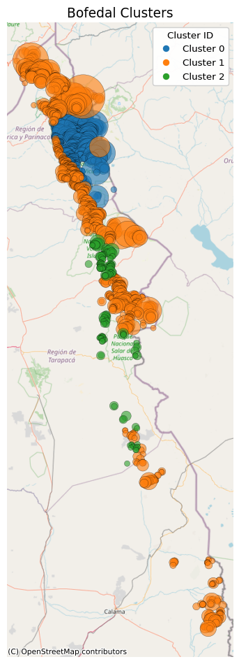

import pandas as pd
import re
from datetime import datetime
import numpy as np
from sklearn.cluster import KMeans
from sklearn.metrics import silhouette_score, davies_bouldin_score, calinski_harabasz_score
from sklearn.preprocessing import StandardScaler
import matplotlib.pyplot as plt
from ipywidgets import interact, widgets, Dropdown
import seaborn as sns
import plotly.graph_objects as go
import geopandas as gpd
from shapely.geometry import Point
import contextily as ctx
from matplotlib.lines import Line2D
import matplotlib.dates as mdates
import matplotlib.colors as mcolors
import matplotlib.cm as cm
import folium
import plotly.express as px7 Running Without Temporal Data (k=3)
df = pd.read_csv("bofedales-clean.csv")
df.drop(["Unnamed: 0"], axis=1, inplace=True)
df.head(1)| Area_m2 | AUC | pct_prot | elev_mean_ | elev_std_m | n_wells | Ground Water Rights 1966-01-01 | Ground Water Rights 1967-01-01 | Ground Water Rights 1968-01-01 | Ground Water Rights 1969-01-01 | ... | NDWI 2019-03 | NDWI 2019-04 | NDWI 2019-05 | NDWI 2019-06 | NDWI 2019-07 | NDWI 2019-08 | NDWI 2019-09 | NDWI 2019-10 | NDWI 2019-11 | NDWI 2019-12 | |
|---|---|---|---|---|---|---|---|---|---|---|---|---|---|---|---|---|---|---|---|---|---|
| 0 | 6300 | 86.769539 | 0.0 | 4162.714286 | 3.953815 | 0.0 | 0.0 | 0.0 | 0.0 | 0.0 | ... | 0.03193 | 0.026136 | 0.022087 | 0.019181 | 0.023405 | 0.015355 | -0.000504 | 0.004056 | 0.014678 | 0.010436 |
1 rows × 2289 columns
df.drop(["lat", "lon"], axis=1, inplace=True)AGG_POLICY = {
# family-name how to aggregate? ("latest" or "mean")
"Precipitation": "mean",
"PET": "mean",
"Temp Max": "mean",
"Temp Min": "mean",
"Surface Water Rights": "latest",
"Ground Water Rights": "latest",
"NDWI": "mean",
"NDVI": "mean"
}def condense_temporal(df, policy):
"""
Collapse temporal columns based on `policy` dict.
Returns a NEW DataFrame (original cols dropped, new cols added).
"""
df = df.copy()
for family, rule in policy.items():
pattern = re.compile(rf"^{re.escape(family)}\s")
fam_cols = [c for c in df.columns if pattern.match(c)]
if not fam_cols:
print(f" No columns found for family: {family}")
continue
if rule == "mean":
new_col = df[fam_cols].mean(axis=1)
new_name = f"{family}"
elif rule == "latest":
def _parse_date(col):
s = col.replace(family, "").strip()
try:
return datetime.strptime(s, "%Y-%m-%d")
except ValueError:
return datetime.strptime(s, "%Y-%m")
latest_col = max(fam_cols, key=_parse_date)
new_col = df[latest_col]
new_name = f"{family}"
else:
raise ValueError(f"Unknown rule '{rule}' for {family}")
df[new_name] = new_col
df = df.drop(columns=fam_cols)
return dfdf_condensed = condense_temporal(df, AGG_POLICY)
df_condensed = df_condensed.rename(columns={'pct_prot': 'Percentage Protected Land (of total bofedal)',
'Area_m2': 'Area (m²)',
'AUC': 'Area of basin',
'elev_mean_': 'Average Elevation (m)',
'elev_std_m': 'Elevation Standard Deviation (m)',
'n_wells': 'Number of wells (per catchment area)',
'Precipitation': 'Precipitation (mm)',
'PET': 'PET (mm)',
'Temp Max': 'Maximum Temperature (°C)',
'Temp Min': 'Minimum Temperature (°C)',
'Surface Water Rights': 'Surface Water Rights (L/s)',
'Ground Water Rights': 'Ground Water Rights (L/s)',
})
features_df = (
df_condensed
.select_dtypes("number")
.drop(columns=["cluster"], errors="ignore")
)
scaler = StandardScaler()
X_scaled = scaler.fit_transform(features_df)def kmeans_diagnostics(
features_df,
k_range=range(2, 11),
scaler=None,
random_state=0
):
"""
Runs KMeans for each k in k_range, computes cluster-validity metrics,
makes diagnostic plots, and returns a DataFrame of the results.
"""
X = features_df.select_dtypes('number').copy()
scaler = scaler or StandardScaler()
X_scaled = scaler.fit_transform(X)
inertias, sils, dbs, chs = [], [], [], []
for k in k_range:
km = KMeans(n_clusters=k, random_state=random_state, n_init="auto")
labels = km.fit_predict(X_scaled)
inertias.append(km.inertia_)
sils.append(silhouette_score(X_scaled, labels))
dbs.append(davies_bouldin_score(X_scaled, labels))
chs.append(calinski_harabasz_score(X_scaled, labels))
fig, axes = plt.subplots(1, 2, figsize=(12, 4))
axes[0].plot(k_range, inertias, "o-")
axes[0].set(
xlabel="k (clusters)",
ylabel="Inertia (WCSS)",
title="Elbow method"
)
axes[1].plot(k_range, sils, "o-", label="Silhouette ↑")
axes[1].plot(k_range, dbs, "o-", label="Davies–Bouldin ↓")
axes[1].plot(k_range, chs, "o-", label="Calinski–Harabasz ↑")
axes[1].set(
xlabel="k (clusters)",
title="Cluster-validity indices"
)
axes[1].legend()
plt.tight_layout()
plt.show()
metrics = pd.DataFrame({
"k": list(k_range),
"inertia": inertias,
"silhouette": sils,
"davies_bouldin": dbs,
"calinski_harabasz": chs
})
return metrics
metrics = kmeans_diagnostics(
features_df,
k_range=range(2, 11),
random_state=42
)
display(metrics.sort_values("silhouette", ascending=False))
| k | inertia | silhouette | davies_bouldin | calinski_harabasz | |
|---|---|---|---|---|---|
| 0 | 2 | 24487.019836 | 0.567626 | 0.561799 | 1136.279464 |
| 1 | 3 | 18113.360620 | 0.323346 | 1.113283 | 1213.057466 |
| 2 | 4 | 15573.777886 | 0.312550 | 1.309326 | 1077.738599 |
| 3 | 5 | 14130.147582 | 0.283505 | 1.341564 | 955.114949 |
| 7 | 9 | 9894.428930 | 0.274834 | 1.247715 | 816.033288 |
| 6 | 8 | 10458.801158 | 0.270735 | 1.232154 | 863.161538 |
| 5 | 7 | 12153.917345 | 0.261101 | 1.425589 | 808.174314 |
| 4 | 6 | 13983.328016 | 0.256730 | 1.605868 | 777.117932 |
| 8 | 10 | 9747.609364 | 0.250140 | 1.413670 | 740.220904 |
Due to the above metrics, we use k=3 for the algorithm
k=3
kmeans = KMeans(n_clusters=k, random_state=0, n_init="auto").fit(X_scaled)
df_condensed["cluster"] = kmeans.labels_
df_condensed.head(3)| Area (m²) | Area of basin | Percentage Protected Land (of total bofedal) | Average Elevation (m) | Elevation Standard Deviation (m) | Number of wells (per catchment area) | Precipitation (mm) | PET (mm) | Maximum Temperature (°C) | Minimum Temperature (°C) | Surface Water Rights (L/s) | Ground Water Rights (L/s) | NDWI | NDVI | cluster | |
|---|---|---|---|---|---|---|---|---|---|---|---|---|---|---|---|
| 0 | 6300 | 86.769539 | 0.0 | 4162.714286 | 3.953815 | 0.0 | 15.011753 | 76.43679 | 9.74673 | -5.034592 | 1715.5 | 2424.3 | -0.003601 | 0.218041 | 1 |
| 1 | 5400 | 83.176353 | 0.0 | 4073.500000 | 12.406316 | 0.0 | 15.011753 | 76.43679 | 9.74673 | -5.034592 | 1715.5 | 2424.3 | -0.046695 | 0.205608 | 1 |
| 2 | 6300 | 103.719438 | 0.0 | 4278.571429 | 6.161102 | 0.0 | 15.011753 | 76.43679 | 9.74673 | -5.034592 | 1715.5 | 2424.3 | 0.035979 | 0.180369 | 1 |
sns.pairplot(
df_condensed.assign(cluster=kmeans.labels_),
vars=["Maximum Temperature (°C)", "Precipitation (mm)", "PET (mm)"],
hue="cluster", palette="Set2"
); plt.show()
centroids = pd.DataFrame(kmeans.cluster_centers_, columns=features_df.columns)
print("\nCentroid means (k = 3):")
display(centroids.T)
Centroid means (k = 3):| 0 | 1 | 2 | |
|---|---|---|---|
| Area (m²) | -0.002319 | 0.013485 | -0.094332 |
| Area of basin | -0.351732 | 0.279181 | 0.028752 |
| Percentage Protected Land (of total bofedal) | 0.931268 | -0.680084 | -0.555803 |
| Average Elevation (m) | 0.495675 | -0.304058 | -0.766003 |
| Elevation Standard Deviation (m) | -0.110698 | 0.100587 | -0.094223 |
| Number of wells (per catchment area) | -0.266041 | -0.254487 | 3.801576 |
| Precipitation (mm) | 0.786080 | -0.356371 | -2.236167 |
| PET (mm) | -0.371031 | -0.126565 | 3.448225 |
| Maximum Temperature (°C) | -0.461297 | -0.032838 | 3.276376 |
| Minimum Temperature (°C) | -0.807797 | 0.357518 | 2.368550 |
| Surface Water Rights (L/s) | 1.095665 | -0.810426 | -0.570421 |
| Ground Water Rights (L/s) | -0.257634 | -0.263003 | 3.815851 |
| NDWI | -0.341034 | 0.285102 | -0.089108 |
| NDVI | -0.283815 | 0.231884 | -0.030463 |
7.0.0.1 Results
- Cluster 0: Cool & wet bofedales
- Cluster 1: Moderate sites balancing both factors
- Cluster 2: Hot & extremely dry outliers
df_condensed["lat"] = pd.read_csv("bofedales-clean.csv")["lat"]
df_condensed["lon"] = pd.read_csv("bofedales-clean.csv")["lon"]
df = df_condensedgeometry = [Point(xy) for xy in zip(df.lon, df.lat)]
gdf = gpd.GeoDataFrame(
df.copy(),
geometry=geometry,
crs="EPSG:4326"
)
gdf["size_for_plot"] = gdf["Area (m²)"].apply(lambda a: (a**0.5))
scale_factor = 0.5
gdf["size_for_plot"] *= scale_factor
gdf_3857 = gdf.to_crs(epsg=3857)
fig, ax = plt.subplots(figsize=(8, 10))
cmap = plt.get_cmap("tab10")
for i, cluster_id in enumerate(sorted(gdf_3857["cluster"].unique())):
subset = gdf_3857[gdf_3857["cluster"] == cluster_id]
ax.scatter(
subset.geometry.x,
subset.geometry.y,
s=subset["size_for_plot"],
c=[cmap(i)],
alpha=0.6,
edgecolor="k",
linewidth=0.3,
label=f"Cluster {cluster_id}"
)
ctx.add_basemap(
ax,
source=ctx.providers.OpenStreetMap.Mapnik,
)
cluster_handles = []
for idx, cluster_id in enumerate(sorted(gdf_3857["cluster"].unique())):
cluster_handles.append(
Line2D(
[], [],
marker="o",
markersize=6,
color=cmap(idx),
linestyle="",
label=f"Cluster {cluster_id}",
)
)
legend1 = ax.legend(handles=cluster_handles, title="Cluster ID", loc="upper right")
ax.add_artist(legend1)
ax.set_aspect('equal', adjustable='box')
ax.set_axis_off()
ax.set_title("Bofedal Clusters", fontsize=14)
plt.tight_layout()
plt.show()
palette = [
"indianred","lightsalmon","mediumaquamarine","powderblue","darkslateblue",
"mediumturquoise","lavender","palevioletred","olivedrab","lightpink",
"gold","mediumvioletred","lightcoral","tomato","sandybrown",
"darkseagreen","lemonchiffon","darksalmon","darkred","firebrick",
"oldlace","royalblue","mediumpurple","plum"
]
agg = (df_condensed
.groupby("cluster")
.mean()
.reset_index())
def make_trace(var, colour):
return go.Bar(
x=agg["cluster"].astype(str),
y=agg[var],
marker=dict(color=colour, line=dict(color="black")),
name=var
)
vars_list = list(agg.columns[1:])
default_var = vars_list[0]
fig = go.Figure(make_trace(default_var, palette[0]))
buttons = []
for i, var in enumerate(vars_list):
buttons.append(
dict(
label = var,
method = "update",
args = [
{"y": [agg[var]],
"marker.color": [palette[i % len(palette)]]},
{
"title": f"Average {var} per cluster",
"yaxis": {"title": {"text": var}}
}
]
)
)
fig.update_layout(
yaxis_title=default_var,
xaxis=dict(title="Cluster", type="category"),
updatemenus=[dict(
type="dropdown",
direction="down",
showactive=True,
buttons=buttons,
x=0.0, xanchor="left",
y=1.15, yanchor="top"
)],
margin=dict(t=90, r=20, l=60, b=50),
height=450, width=700,
showlegend=False
)
fig